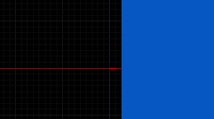
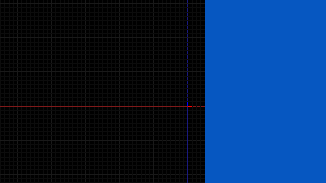

Hello, I need to calculate vertex position in world coordinates in my shader. For example, I want to flood fill all points, which X is greater than 10.0, with plain color .
My shader code:
#include "Uniforms.glsl"
#include "Samplers.glsl"
#include "Transform.glsl"
#include "ScreenPos.glsl"
varying vec2 vScreenPos;
varying vec3 vWorldPos;
void VS()
{
mat4 modelMatrix = iModelMatrix;
vec3 worldPos = GetWorldPos (modelMatrix);
gl_Position = GetClipPos (worldPos);
vScreenPos = GetScreenPosPreDiv (gl_Position);
vWorldPos = worldPos + cCameraPos;
}
void PS()
{
vec3 diffRGB = texture2D (sDiffMap, vScreenPos).rgb;
if (vWorldPos.x > 10.0)
{
gl_FragColor = vec4 (0.023, 0.341, 0.756, 1.0);
}
else
{
gl_FragColor = vec4 (diffRGB.x, diffRGB.y, diffRGB.z, 1.0);
}
}
But result don’t match what I expected.
Camera Y is 100:

Camera Y is 200:

In first case it fills points which X is greater that 2, in second case – greater than 4. And If I change camera Y, result changes too.
What is it? How I can get world coordinates of point/vertex?
P.S. Replacing
vWorldPos = worldPos + cCameraPos;
with
vWorldPos = worldPos;
doesn’t changes anything. And sorry for bad quality of pictures.